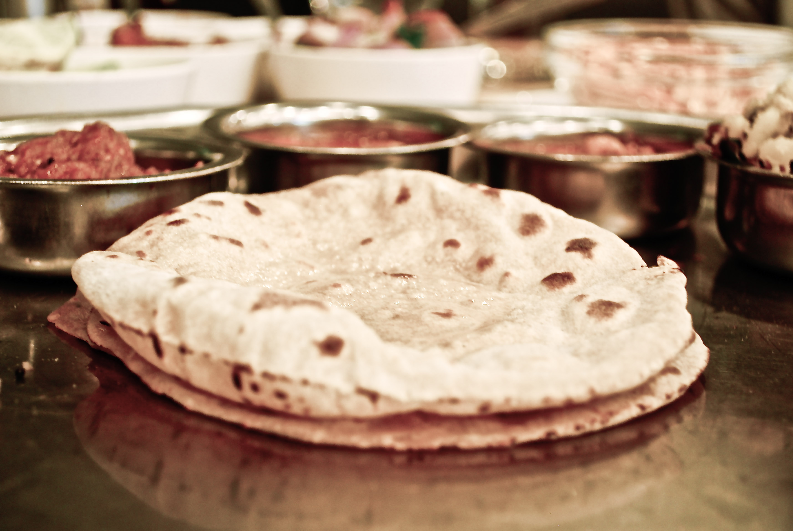

Chapati (Indian Bread) Recipe

Description
This chapati recipe is simple and delicious. Serve this Indian flatbread with
curries or use it as a sandwich wrap. Enjoy!
Ingredients
- 1 cup whole wheat flour
- 1 cup all-purpose flour
- 1 teaspoon salt
- ¾ cup hot water or as needed
- 2 tablespoons olive oil
Steps
-
Mix flours and salt in a large bowl. Use a wooden spoon to stir in water and olive
oil. Mix until a soft, elastic dough forms and add more water, if needed. Knead
dough on a lightly floured surface until smooth.
-
Divide dough into 10 equal portions, or less if you want larger chapatis.
Roll each piece into a ball and let rest for a few minutes.
-
Heat a lightly greased skillet over medium heat.
-
Use a rolling pin to roll dough balls out on a lightly
floured surface until very thin, like a tortilla.
-
When the skillet starts to smoke, place a chapati in it.
Cook until bottom has brown spots, about 30 seconds, then flip and cook 30
seconds more. Repeat to cook remaining chapatis.